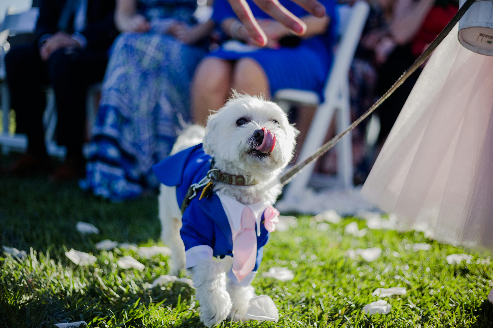

The Growing Trend: Dogs at Weddings
More couples than ever are choosing to include their dogs on their wedding day. According to wedding industry surveys, pet inclusion at ceremonies has grown significantly over the past several years — and it's not hard to understand why. For many couples, their dog has been present through every stage of their relationship. They've witnessed the proposal, survived long-distance visits, and been the constant presence through every transition. Leaving them out of the wedding can feel like a meaningful omission.
Sarasota's outdoor venues make this trend particularly achievable on Florida's Gulf Coast. Waterfront estates on Sarasota Bay, private gardens in Palmer Ranch, and open-air ceremony sites throughout the Sarasota area offer natural settings where a dog's presence is both beautiful and logistically manageable. Beach ceremonies at Siesta Key and Lido Key are also increasingly popular for couples who want a relaxed, pet-welcoming atmosphere. The key is having the right support in place — and that's where a professional wedding dog attendant changes everything.
Why Asking a Friend or Family Member Never Quite Works
The instinct to ask a trusted friend or family member to "watch the dog" during the wedding is understandable — but it rarely works as well as people hope. The problem is that everyone at your wedding has a role. Your maid of honor is managing the wedding party. Your parents are being seated and photographed. Your best friend is toasting and celebrating. No one has the bandwidth to give your dog the consistent, focused attention they actually need during what is, for them, an overwhelming and unfamiliar situation.
Dogs pick up on the energy of crowds, loud music, unfamiliar smells, and the emotional charge of a ceremony. Without someone dedicated to reading their signals and responding appropriately, even a well-trained, calm dog can become anxious, distracted, or disruptive at exactly the wrong moment. The result is stress — for the dog, for whoever got volunteered to manage them, and often for the couple themselves.
A professional wedding dog attendant eliminates that problem entirely. Their only job is your dog. They're not distracted by toasts, first dances, or family photo obligations. They're focused, present, and prepared to handle whatever the day brings.
What a Professional Wedding Dog Attendant Does: A Full Day Breakdown
Understanding what a professional attendant actually handles helps couples see how seamlessly dog inclusion can work when it's managed correctly. Here's a step-by-step picture of what the day looks like:
Throughout the entire day, the attendant manages feeding schedules, hydration, rest periods, and stress monitoring. They carry everything your dog needs and communicate proactively with you (or your coordinator) about how things are going.
Is Your Dog Right for a Wedding? An Honest Assessment
Not every dog is a natural fit for wedding participation — and that's completely okay. Part of what a professional attendant brings is an honest, experienced perspective on what a dog can realistically handle. There are a few key factors worth thinking through before you commit to bringing your dog to your ceremony:
Temperament Is the Biggest Factor
Dogs that do well at weddings tend to be naturally calm or adaptable. They don't panic at loud music or crowds, they respond reasonably well to basic leash direction, and they can settle when asked. Dogs that are highly reactive to strangers, loud sounds, or unfamiliar environments may find the stimulation of a wedding day overwhelming — regardless of how well-intentioned the plan is.
Training Baseline Matters
A dog doesn't need to be competition-level trained to participate in a wedding, but they should have a reliable "sit," respond to leash direction, and be comfortable being handled by someone other than their primary owner. If your dog is working on reactivity or has unpredictable moments around strangers, a wedding day is not the right environment to test those limits.
Consider a Limited Role
Many couples find that a brief ceremony appearance — walking down the aisle and then heading home — is the perfect balance. The dog is included in the most memorable moment, captured in photos, and then removed from an environment that might become stressful as the event continues and the crowd grows. This is often the wisest approach for dogs who are well-trained but not experienced with large events.
Size and Breed Considerations
Smaller dogs can sometimes be easier to manage in ceremony settings, but larger, calmer breeds often handle the day with remarkable composure. Breed temperament is a general guide — individual personality matters far more than breed generalizations. A high-energy Jack Russell may need to stay home, while a relaxed Great Dane may be a perfect aisle walker.
Planning Your Wedding Dog's Participation: A Timeline
Successful dog inclusion at a wedding doesn't happen last minute. Here's how to approach the planning process:
- Book your attendant early. Wedding pet attendants book out just like photographers and florists. If you're planning a Sarasota area wedding, contact Wiggle Your Tail 3–6 months in advance to confirm availability and begin coordination.
- Schedule a meet-and-greet before the day. This is non-negotiable for a smooth experience. Your dog should be familiar with the person handling them before the wedding. Wiggle Your Tail always includes a pre-wedding meeting to build rapport, discuss your dog's routine, and identify any triggers or needs.
- Coordinate with your venue. Confirm that your venue allows dogs on the property and clarify any restrictions. Some venues require dogs to be leashed at all times; others have areas where dogs cannot go (such as indoor reception spaces). Your attendant should know this before the day.
- Loop in your photographer. Photographers who've worked with dogs before know how to capture the moments. Brief them on your dog's personality and planned role so they're ready to work with the attendant on timing and positioning.
- Share your dog's full routine. Give the attendant a detailed picture of your dog's feeding schedule, favorite treats, known triggers, cues they respond to, and any health considerations. The more they know, the better they can care for your pet.
Sarasota Venues and Dog-Friendly Weddings
The good news for couples in the Sarasota area is that the region's natural beauty lends itself to outdoor ceremonies — and outdoor ceremonies tend to be the most pet-friendly. Many waterfront estates, private gardens, and open-air event spaces in and around Sarasota are willing to accommodate a well-managed dog with advance notice and a professional handler on-site.
Venues along Sarasota Bay, in the Ringling Estate area, and private estates in Lakewood Ranch and Longboat Key are popular options. Beach ceremonies at Siesta Key and Lido Key are also possible, though beach permit rules and environmental considerations vary — your attendant can help you think through the logistics specific to your venue.
Indoor ballroom venues or hotel receptions often have stricter no-pet policies, though even some of these can accommodate a dog for an outdoor ceremony component if the pet is removed before the indoor reception begins. The important thing is to ask your venue directly and early, rather than assuming or surprising them on the day.
What Wiggle Your Tail Brings to Your Wedding Day
Christa founded Wiggle Your Tail with a genuine love for animals and a deep respect for the role pets play in people's lives. When we take on a wedding pet attendant engagement, we're not just providing a logistics service — we're taking responsibility for a member of your family on one of the most important days of your life. That's something we take seriously.
Wiggle Your Tail is bonded and insured, and Christa holds Pet CPR and First Aid certification. We've been recognized with a Platinum Award for service excellence and have built our reputation in Sarasota, Siesta Key, Bradenton, Lakewood Ranch, and Longboat Key on trust and genuine care. The meet-and-greet before your wedding isn't just a formality — it's how we learn your dog so that on the day itself, they're with someone who already feels familiar.
We care about the animal's wellbeing as much as we care about the perfect photo. If your dog is stressed, we'll say so. If they need to leave early, we'll make that call without hesitation. Our goal is always a positive experience for your pet — because a happy dog makes for genuinely beautiful, authentic memories, not just staged ones.
Learn more about our wedding pet attendant service, read about how it works, or contact us to talk through your wedding date and what you're envisioning for your dog's role.
Frequently Asked Questions
Ready to include your dog in your Sarasota wedding? Explore our full service details, learn how the process works, or reach out to start planning.